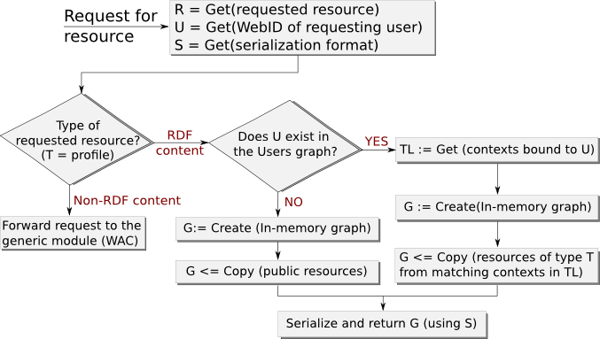

@prefix foaf: <http://xmlns.com/foaf/0.1/> .
<> a foaf:PersonalProfileDocument ;
foaf:maker <#me> ;
foaf:primaryTopic <#me> .
<#me> a foaf:Person ;
foaf:name "Barry Examplethorn" ;
foaf:knows <https://example.edu/p/Ann#MSc> ;
foaf:img <https://barry.example/picture.jpg> .@prefix foaf: <http://xmlns.com/foaf/0.1/> .
@prefix rdfs: <http://www.w3.org/2000/01/rdf-schema#> .
<> a foaf:PersonalProfileDocument ;
foaf:maker <#me> ;
foaf:primaryTopic <#me> .
<#me> a foaf:Person ;
foaf:name "Bob" ;
rdfs:seeAlso <https://barry.example/friends> .@prefix foaf: <http://xmlns.com/foaf/0.1/> .
<> a foaf:PersonalProfileDocument ;
foaf:maker <https://barry.example/profile#me> ;
foaf:primaryTopic <https://barry.example/profile#me> .
<https://barry.example/profile#me> a foaf:Person ;
foaf:knows <https://example.edu/p/Ann#MSc> ;
foaf:knows <https://company.com/people/Sue#i> .@prefix foaf: <http://xmlns.com/foaf/0.1/> .
@prefix cert: <http://www.w3.org/ns/auth/cert#> .
<#me> a foaf:Person ;
foaf:name "Barry";
cert:key [ a cert:RSAPublicKey;
cert:modulus "cb28...91a1"^^xsd:hexBinary;
cert:exponent 65537 ;
] .PREFIX cert: <http://www.w3.org/ns/auth/cert#>
PREFIX xsd: <http://www.w3.org/2001/XMLSchema#>
ASK {
<https://barry.example/profile#me> cert:key [
cert:modulus "cb28...91a1"^^xsd:hexBinary;
cert:exponent 65537;
] .
}@prefix foaf: <http://xmlns.com/foaf/0.1/> .
@prefix cert: <http://www.w3.org/ns/auth/cert#> .
<#me> a foaf:Person ;
foaf:name "Barry" ;
cert:secretary <https://example.com/secretary/card#me> .GET /private/ HTTP/1.1
Host: example.edu
Accept: text/turtle
On-Behalf-Of: https://barry.example/profile#me@prefix ctxt: <http://ns.rww.io/context#> .
<> a ctxt:Context ;
ctxt:name "Friends" ;
ctxt:resources <#profile>, <#wall>, <#posts> .
<#profile> a foaf:Person ;
foaf:phone "+1 222 333 444" ;
foaf:mbox <mailto:barry@mail.com> .profile
